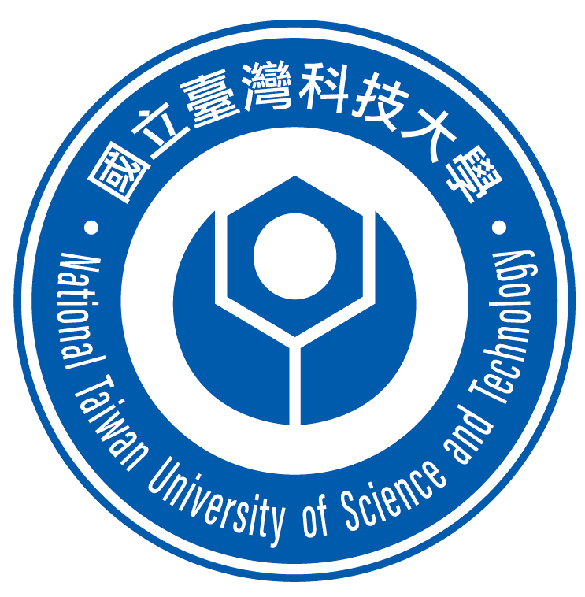
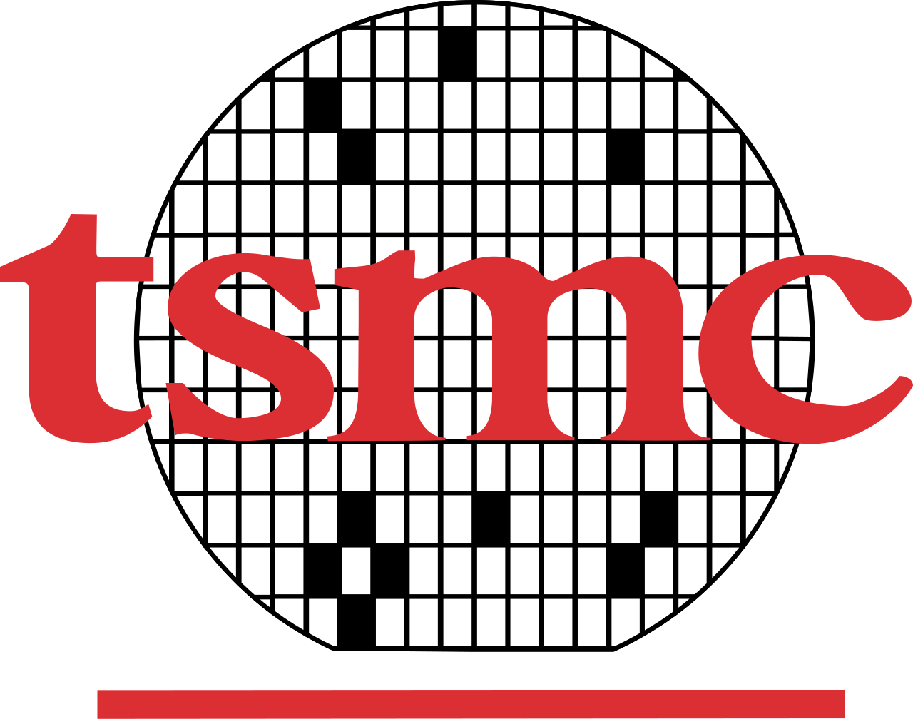
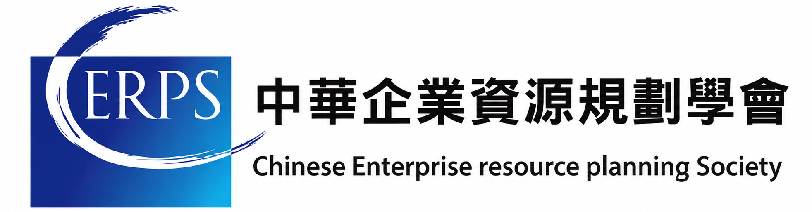
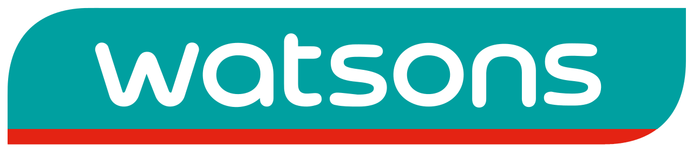
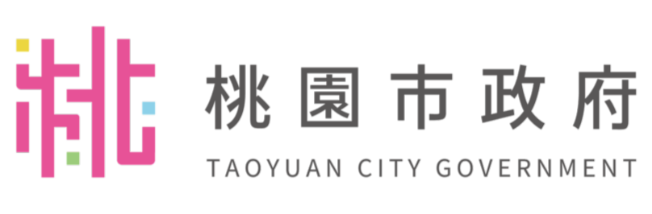

就讀中
國立臺灣科技大學
資訊管理研究所
SELECTED WORKS
Chen-An, Chuang
輕觸任意位置，開始探索
Professional Summary
我目前就讀國立臺灣科技大學資訊管理研究所，具備 SAP ERP 導入、數位轉型、LLM 應用、 AI 影像辨識與資安風險思維等實務經驗。我的工作核心是將企業系統、專案管理與實作能力結合， 把技術想法轉化為可落地、可維運的解決方案。近期特別聚焦於 RAG、MCP 工具調用流程、 領域型 AI 系統，以及能兼顧資料安全與治理需求的主權 AI 架構。
Core Skills
Education
Experience

參與 SAP 整合服務現代化、AI 工具開發、介面自動化驗證與企業流程優化。
參與企業數位轉型相關工作，聚焦技術導入、流程改善與實務場景中的應用落地。
擔任兒童程式設計教師，以循序漸進的課程與創意專案，引導學生理解邏輯思維與程式設計基礎。

參與 SAP 顧問相關任務，累積 ERP 模組學習、系統導入與企業情境支援經驗。

支援總公司 IT 部門作業，理解零售總部環境中企業技術團隊的系統維運與服務支援模式。

協助公部門資訊業務，接觸政府服務流程中的系統運作、資訊支援與行政場景需求。
完成 SAP 多模組訓練後，擔任 FI 與 ABAP 模組講師，教授 SAP 財務會計與 ABAP 程式設計。
Selected Projects
團隊檢索機器人視覺與觸覺融合技術，分析 1,175 個專利家族，比對五類觸覺感測技術在抓取、安全與照護上的布局。
針對金屬中心（MIRDC）的題目，建議優先發展用於照護抓取的光學觸覺感測。
JUST RESULT｜2026 年產業專利分析與布局競賽第一名
升級 Spring Boot 後端，串接 MCP 與 Spring AI，將 SAP 查詢封裝為 4 項工具，並以 ABAP 自動化測試驗證 7 組介面。
完成 Business Partner 主檔異動追蹤 Enhancement。透過共用開發手冊，新 AI 工具開發效率提升約 70%。
為地政士開發全地端法規問答系統，透過 MCP 檢索土地法等法規，回答時附上可核對的法條。
研究成果：〈具引用驗證與結構性護欄之 Agentic 法律問答系統：以都市更新法規為例〉全文獲 2026 中國工業工程學會年會暨學術研討會（CIIE 2026）接受。
擔任專題組長，整合 YOLOv5、OpenPose 與 PID 飛行控制，讓無人機能辨識搜救目標並規劃運輸路線。
獲資管系畢業專題發表第二名、桃園青創力學生創業競賽優選，以及花蓮青年鏈結地方產業專題競賽行動獎勵金。
擔任專案經理，整合 SAP IMG、ABAP 與 Python 自動化，依產品資料與碳係數計算碳足跡。獲結案競賽第二名。
代表東華 ERP 學生團隊與韓國仁荷大學交流，以外語簡報和討論資料分析如何支援商業決策。
協調第 25 屆資管系畢業專題展的時程、人力與成果發表，並參與花蓮 USR 計畫，將資訊技術應用於地方數位共融。
實作演唱會訂票資料庫、駕訓班 LINE Bot 與 Unity 駕照模擬器，分別練習交易資料設計、對話流程與互動模擬。
Achievements
第一名｜JUST RESULT 團隊，以機器人感知融合技術為主題。
官方公告CERPS SAP S/4HANA 企業資源規劃軟體應用師證照。
Aerial Vision 搜救運輸型無人機專題獲得第二名。
Aerial Vision 專案獲得優選。
搜救無人機專案入選前十名，獲行動獎勵金補助。
Leadership